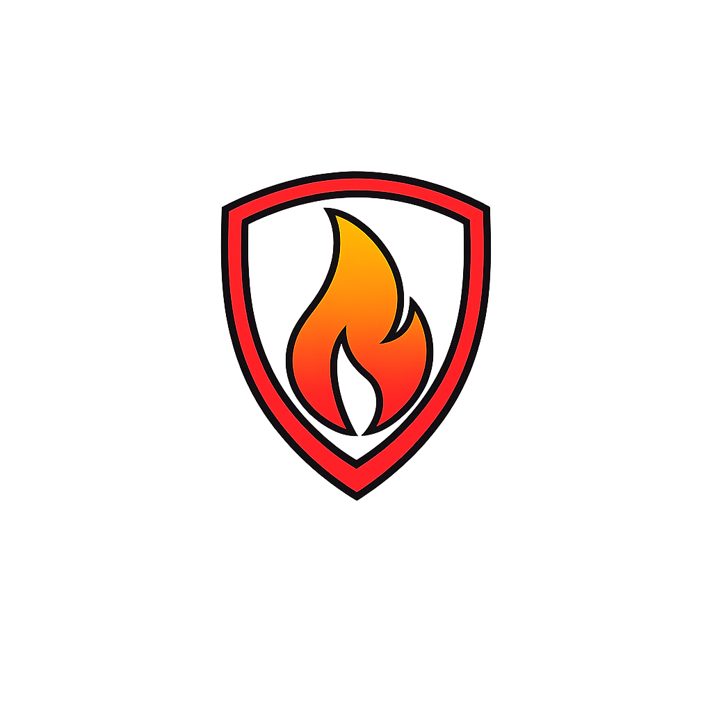

GeoAlertAR · Inteligencia Territorial
Contribuyendo a los Objetivos de Desarrollo Sostenible
GeoAlertAR desarrolla herramientas de inteligencia territorial para la prevención de incendios forestales, la protección de ecosistemas y la gestión del riesgo.
Nuestro trabajo se alinea con los principios de la Agenda 2030 para el Desarrollo Sostenible, contribuyendo especialmente a los siguientes Objetivos:


Compromiso con la Agenda 2030
Nuestro sistema de predicción y prevención de incendios aporta inteligencia territorial a organismos públicos, equipos de defensa civil y empresas forestales, contribuyendo a ecosistemas más resilientes y comunidades mejor preparadas frente al riesgo de incendios.
El uso de los íconos y la rueda de los Objetivos de Desarrollo Sostenible se
realiza con fines informativos para comunicar las áreas en las que GeoAlertAR
contribuye en el marco de la Agenda 2030. GeoAlertAR no está certificado, avalado
ni respaldado por las Naciones Unidas u organismos asociados.